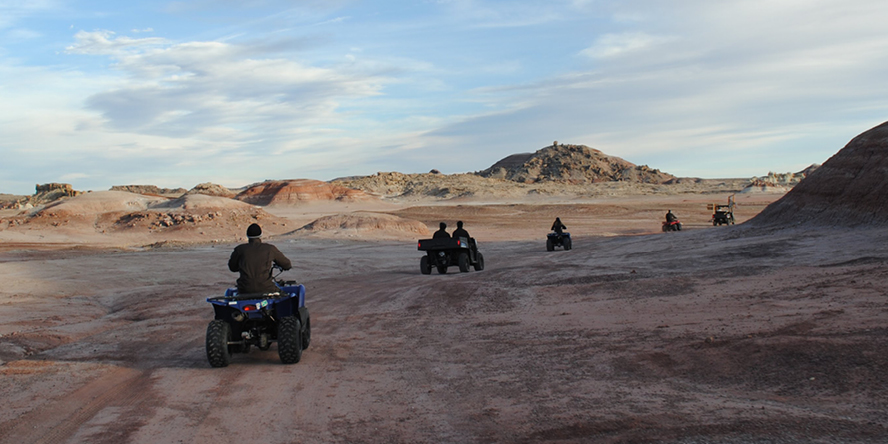

About the Mission
 For two weeks in Hanksville, Utah, a team of Purdue students visited the Mars Desert Research Station
to simulate analog Mars missions in the desert terrain of Utah wilderness. The Space and Earth Analogs
Research Chapter chose 6 members for the crew to visit MDRS.
For two weeks in Hanksville, Utah, a team of Purdue students visited the Mars Desert Research Station
to simulate analog Mars missions in the desert terrain of Utah wilderness. The Space and Earth Analogs
Research Chapter chose 6 members for the crew to visit MDRS.
The program was open to anyone in Purdue who was interested to spend two weeks in Utah, according to president and co-founder Rodrigo Schmitt, a PhD candidate in Aerospace Engineering. Among those joining the crew were, Dr. Kshitij Mall, the executive officer for the mission in 2018. Dr. Mall is currently a Post-Doc at Purdue University. Apart from him, the crew included a geologist, an astronomer and a health and safety officer. Dr. Cesare Guariniello, an alumni of Purdue University has been on this mission four times as an astronomer, commander and Geologist.

The mission was between January 1 to January 14 of 2023 and the team was involved in many STEM research projects focusing on human aspect of space exploration. According to Schmitt, "This environment of isolation of people together in the crew for a very long time , with this pressure of work, in an environment that's literally trying to kill you, that can be explored by the humanity sciences, psychology and health and safety."
Back in 2018, when Dr. Mall was part of the crew, his research was to test the effects of Yoga and meditation on crew members and whether it would be a viable stress release strategy for astronauts in isolation. However, according to him, two weeks was far too short of a time duration to get reliable data. 15 days is quite short to simulate the effects of stress that would set in on a much longer trip.
MDRS takes various measures to make the simulation as realistic as possible, including, according to Dr. Guariniello, having the crew members wait at the door for 5 minutes to simulate the airlock systems. According to Dr. Mall, during the EVA or extravehicular activities, three-to-four people leave the base to do research. During such excursions, the crew members wear suits and communicate with each other through radios. "The experiments and simulations that we do are very close to what we do in space because everything we have to do wearing gloves, which makes it 10 times harder to do simple things", says Mall. Guariniello adds that their visibility, food and water are also limited. The visors affect their visibility and the crew members have to carry food with them ahead of time and take turns cooking. Only shelf-stable foods such as dehydrated and canned goods are allowed.
The Hab or the habitat is a two storey cylindrical building with a dome on top, about eight meters in diameter. The greenhouse is dubbed the Green hab and is where the Green Hab officer works. The station has two observatories, the Musk Observatory and a robotic telescope observatory. The total mission fee included about $2000 per participant.